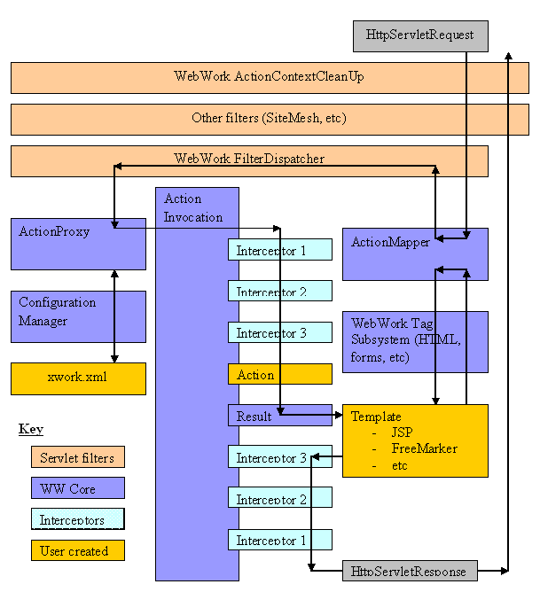

Struts is a flexible control layer based on standard technologies like Java Filters, JavaBeans, ResourceBundles, Locales, and XML, as well as various OpenSymphony packages, like OGNL and XWork.
packages, like OGNL and XWork.
For the Model, the framework can interact with standard data access technologies, like JDBC and EJB
and EJB , as well as most any third-party packages, like Cayenne
, as well as most any third-party packages, like Cayenne , Hibernate
, Hibernate , or iBATIS
, or iBATIS .
.
For the View, the framework works well with JavaServer Pages , including JSTL and JSF, as well as FreeMarker
, including JSTL and JSF, as well as FreeMarker or Velocity
or Velocity Templates, PDF, XSLT, and other presentation systems.
Templates, PDF, XSLT, and other presentation systems.
Aside from actions and results, you can also specify exception handlers and interceptors. Interceptors specify the "request-processing lifecycle" for an action. (What happens to the request before and after the Action class fires.) You can specify both global and local lifecycles. If some of your actions respond to AJAX, SOAP, or JSF requests, you can simplify the lifecycle, and even just "pass through" the request, if you like.
The diagram describes the framework's architecture.

In the diagram, an initial request goes to the Servlet container (such as Tomcat or Resin) is passed through a standard filter chain. The chain includes the (optional) ActionContextCleanUp filter, which is useful when integrating technologies such as SiteMesh. Next, the required FilterDispatcher is called, which in turn consults the ActionMapper to determine if the request should invoke an action.
If the ActionMapper determines that an Action should be invoked, the FilterDispatcher delegates control to the ActionProxy. The ActionProxy consults the framework Configuration Files manager (which may read the struts.xml file). Next, the ActionProxy creates an ActionInvocation, which is responsible for the command pattern implementation. This includes invoking any Interceptors (the before method) in advance of invoking the Action itself.
Once the Action returns, the ActionInvocation is responsible for looking up the proper result associated with the Action result code mapped in struts.xml. The result is then executed, which often (but not always, as is the case for Action Chaining) involves a template written in JSP or FreeMarker to be rendered. While rendering, the templates can utilize the Struts Tags provided by the framework. Some of those components will work with the ActionMapper to render proper URLs for additional requests.
| All objects in this architecture (Action, Result, Interceptor, and so forth) are created by an ObjectFactory. This ObjectFactory is pluggable. You can also provide your own ObjectFactory for any reason that requires knowing when objects in the framework are created. The default ObjectgFactory is Spring. |
Finally, the Interceptors are executed again (in reverse order, calling the after method). Finally, the response returns through the filters configured in the web.xml. If the ActionContextCleanUp filter is present, the FilterDispatcher will not clean up the ThreadLocal ActionContext. If the ActionContextCleanUp filter is not present, the FilterDispatcher will cleanup all ThreadLocals.